孖仔帮
公众号ID：twinsbang
关注
文字：孖仔帮社群全体双胞胎妈妈
图片：来源@KOSOGKAOS
之前连载了圆圈妈妈的单绒双羊子宫日记，陆续收到很多读者朋友的阅读和关注。
自序|我的双胎子宫日记
怀上双胎的孕妈们纷纷加入到我们的双胞胎孕育群，抱团取暖。
发现一个很有趣的现象：
新加入的孕妈们大都一脸不安和惶恐，而准备卸货的准妈妈则一脸淡定和从容，大有指点江山挥斥方遒的气势。
果然，有在我们孕育群混过，并顺利毕业出去的，没有哪个不是老江湖。孕育双胞胎的特殊性让妈妈们还没生娃就已经身披金甲千百战。
想知道孕妈妈们在整个孕期都发生了啥事吗？
这些图告诉你！
以下文字节选自孖仔帮社群全体双胞胎妈妈，由圆圈妈妈整理排版，图片来源@KOSOGKAOS
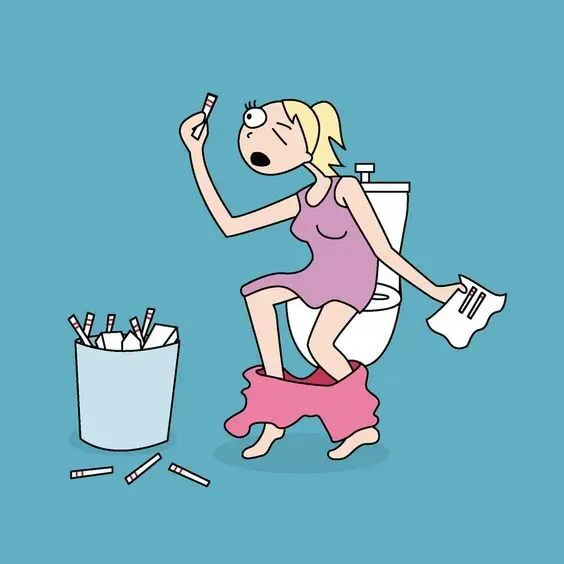
图片来源@KOSOGKAOS
孕4周，
WHAT？！
两条杠！？
会不会咋胡？
再测一次，
纳尼？
又测一次，
oh my god！
最后....
卧槽！！出大事了！
真的是怀孕了！
至于怀的是单还是双？
压根没往那方面想。
图片来源@KOSOGKAOS
孕8周，
一起床， 呕！
一刷牙，吐！
一闻到油烟味， 呕！
一喝孕妇奶粉， 吐！
一吃肉， 吐！
每天都在呕呕呕呕呕+吐吐中度过，
好不容易吃了点，
吞不进去，又吐不出来，
卡在咽喉，绝望到哭！
感觉自己命不久矣。
看见什么都提不劲儿，
唯有马桶最亲切，
巴不得随时随地抱着走。
此时，仇恨的是食物，
亲切的是马桶，
因为，能装。
图片来源@KOSOGKAOS
孕12周，
果然是双胎，
才3个月大就开始显怀了，
跟猪队友的大肚腩有的一比，
不同的是，
他装的是脂肪，
我装的是两块日渐长大的小肉团。
图片来源@KOSOGKAOS
孕14周，
走到哪都有一股味道，
如影随形的二氧化硫，
俗称：屁。
屁多的感觉即刺激又滑稽，
特别是一边跑一边放，
让人忍不住想起了火箭升空。
图片来源@KOSOGKAOS
孕16周，
有胃口了，
要报复性地吃回去了！
好想来一杯beer，加冰的那种，
实在不行，可乐也行，
最好配点炸鸡和薯片，
哦，再加个苹果派吧，
不，这根本不够！
我还想吃...
烤串串，臭豆腐，麻辣烫，
超辣特酸那种.....
只要是垃圾食品，
我，统!统!都!想!吃！
图片来源@KOSOGKAOS
孕18周，
憋不住了，真的憋不住了，
这该死的，来自大自然的召唤。
那种呼之欲出的感觉，
犹如上膛的子弹，离弦的弓箭，
我，早已男女不分，
雌雄难辨，
三观尽毁，
六亲不认了。
管它男厕还是女厕，
再不解决，
老娘就要爆！膀！胱！啦！
图片来源@KOSOGKAOS
孕20周，
想穿鞋，但是穿不上了，
除了鞋，
还有很多漂亮衣服也穿不上了，
精神一日比一日憔悴，
身体一天比一天笨重，
身材一点比一天臃肿，
害怕自己再也瘦不回去了。
难道，
孕育双胞胎的真相就是，
美女变野兽？
图片来源@KOSOGKAOS
孕22周，
平躺+抬腿，
这么简单的动作，
已经使不得了，
别说抬腿了，只要平躺着，
腰椎就感觉要断裂似的疼痛。
再也不能趴着睡了，
怎么睡都不爽，
有天晚上，
忘记自己怀孕又趴着睡了，
被猪队友一脚给踹醒了，
踹完又给我道歉，
说下手太重，
忘记我是个孕妇，
肚里还兜着两个双蛋黄……
图片来源@KOSOGKAOS
孕24周，
切，这小小的缝隙....
想当年，
前凸后翘，婀娜多姿的我，
可是现在，
胸是过去了，但...
肚子，卡住了！
图片来源@KOSOGKAOS
孕26周，
好想念撸铁的日子，
想当年，
老娘也是健身会所的一道闪电，
惊艳了时光，
征服了所有推销私教课的帅小伙，
逼得他们不得不，
把我拖黑。
我安慰自己，
也许产后，
他们又会一窝蜂地把我加回去，
这么肥沃的上帝，
绝对是私教课的香饽饽。
图片来源@KOSOGKAOS
孕28周，
发现整个肚皮，
都是黑乎乎的毛毛，
还有大腿根部，
那一条条又红又紫又青的妊娠纹...
一根根地剪毛，
我波澜不惊的内心，
也在一滴滴地淌血，
想起孕前新买的比基尼，
一次都没穿过，
怕是这辈子都无法再穿了。
图片来源@KOSOGKAOS
孕29周，
感觉好重啊！
掉在地上的钥匙，
已经捡不到了，
弯腰拾物，
这么简单的动作，
搁我这，
比西天取经还要曲折。
我在想，
要是天上掉百元大钞任我捡，
我都要考虑下了，
要不要去捡？
图片来源@KOSOGKAOS
孕31周，
没办法洗澡了 ，
下半身那些重要的部位，
已经够不着了，
什么叫远在天边，尽在眼前？
大概就是这个样子的吧！
图片来源@KOSOGKAOS
孕32周，
从来没觉得,
被人踹一次还想再来一次。
大概只有这一刻：胎动，
果然有伴儿热闹，
一会儿左勾拳一会儿右踢腿，
可怜我这五脏六腑，
被踹得火辣辣地疼，
整个肚皮都变形了，
然而，
我竟然那么享受这种酸爽的感觉。
很感动， 很喜欢，很暖心，很期待，很好玩... 想哭又也想笑。
已生二胎的闺蜜说，
我这不是神经病，而是准备当妈了。
图片来源@KOSOGKAOS
孕33周，
感觉肚子那两只，
就像定时炸弹，
想起昨晚看的生门，一整晚都没睡，
总是会莫名其妙地流泪，
然而一想到，我被很多人特别照顾着，
我没有理由不坚强，
感恩身边人的照顾，
坐地铁有人让座，
坐公交司机会等我坐稳才开车，
同事烟瘾大都会自觉跑外面去，
大件物品快递小哥会帮忙送上门...
我想，
等两小只出生后，一定要教他们善良，
把爱心传递给每个人。
图片来源@KOSOGKAOS
孕34周，
睡觉是个奢侈品，
站也不是，坐也不是，
躺也不是，跪也不是....
怎么睡都睡不好，
搁哪哪都不爽，
还有数不尽的尿意也来凑热闹，
刚从马桶上站起来，
回到床上躺下两分钟，
又要去了，
每次都有排尿，量少，一两滴，
并不是错觉，
临睡前最痛苦，夜里尿意被放大，
几乎每晚都折腾到一两点才睡。
仿佛一整晚，
都在床和厕所，两点一线中，
穿梭徘徊。
图片来源@KOSOGKAOS
孕35周，
对不起，我崩溃了。
傲娇的我，终于承认，
我是产前忧郁了。
抱着队友狠狠地哭了一场。
一路走来，心惊胆战，
NT，唐筛，四维，糖耐....
每一步都在过关斩将，
越到最后，
心就越累越慌...
就让我哭个够吧！
图片来源@KOSOGKAOS
孕36周，
已经彻底走不动了 。
终于知道，
为什么世界上会有轮椅这个东西。
关键时刻，它真的很香。
但是，
坐在轮椅上的感觉很不好，
感觉自己很弱，很废，很逊，
犹如汪洋大海中的一艘小破船...
船上只有我们娘仨，
一个身体，三颗心跳！
可是，
我突然就不怕了，
我要坚强给孩子们看！
瞧瞧他们的娘啊，
多飒！
图片来源@KOSOGKAOS
孕37周，
要卸货了，
快要与那两个小家伙见面了。
紧张，期待。
一个不小心用力，
结果...娃没出来，
屁蹦出来了，
尿撒了一地，
屎，也撑出来了。
娃娃们的爹呆滞了，
医生麻木了，
我也看开了，
大家都习惯了，
待产的妇女，
哪里来的尊严可言？
最后，
一阵手忙脚乱，
拖出去，
剖吧。
今日互动话题
#分享下你当年怀双胎的经历吧#
评论区聊一聊呗！
微信公众号：孖仔帮
ID : twinsbang
专注双胞胎孕育，养育，教育经验分享
扫码关注我们
点一下你会更好看耶

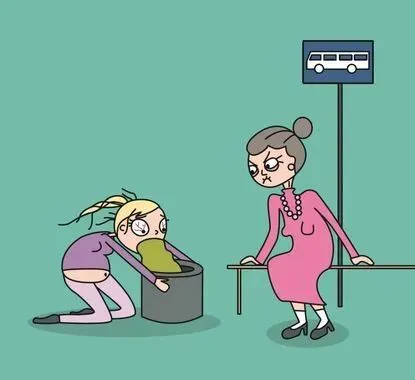
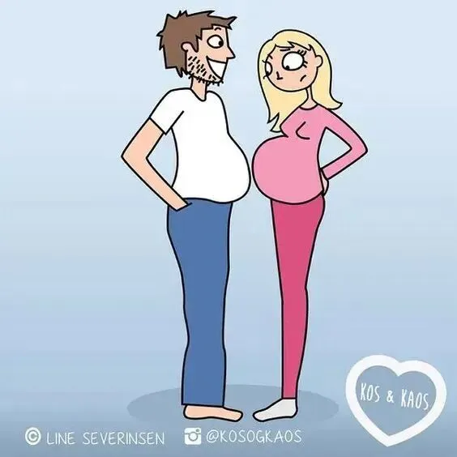
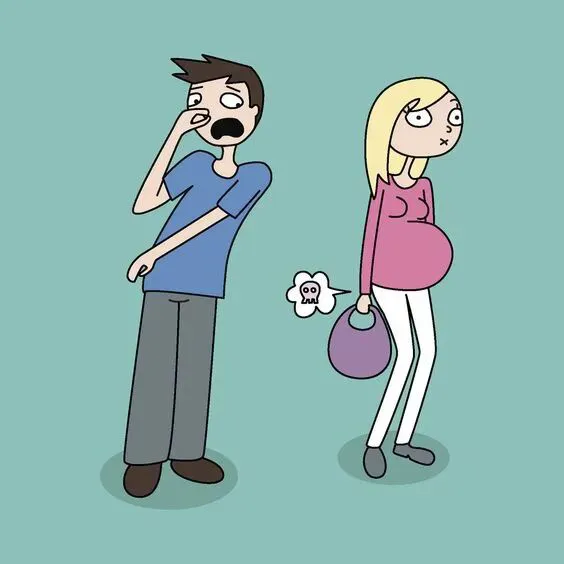
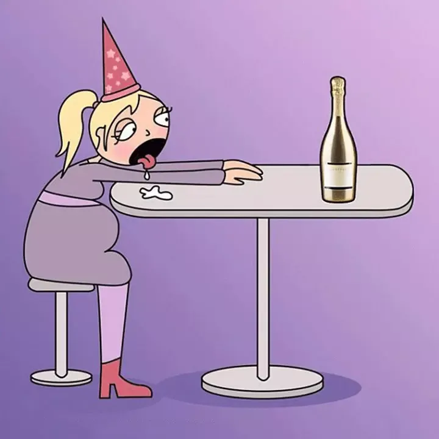
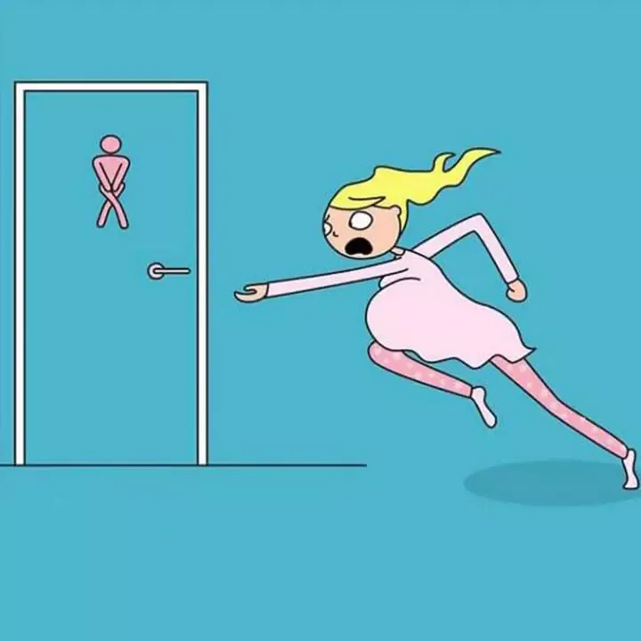
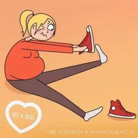
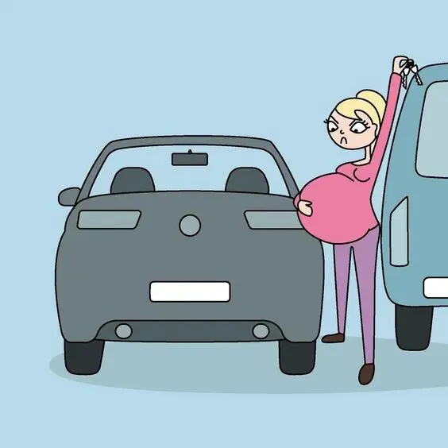
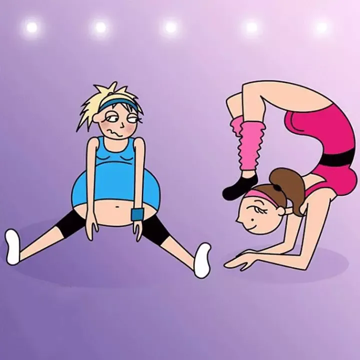
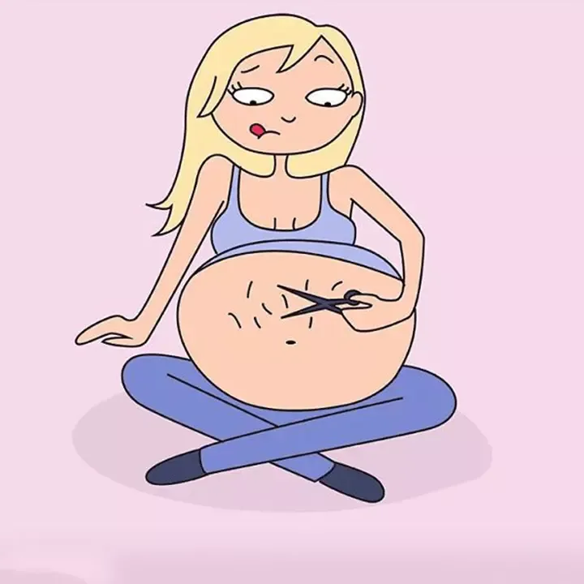
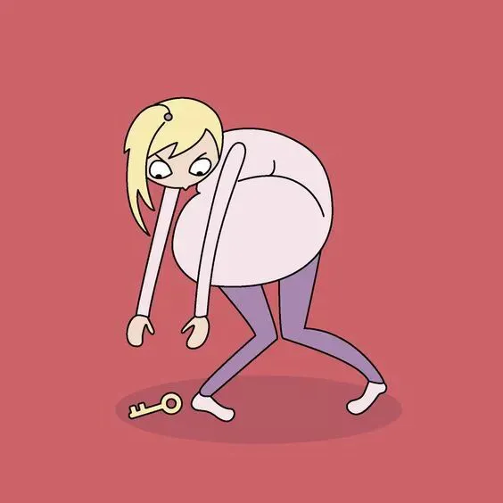
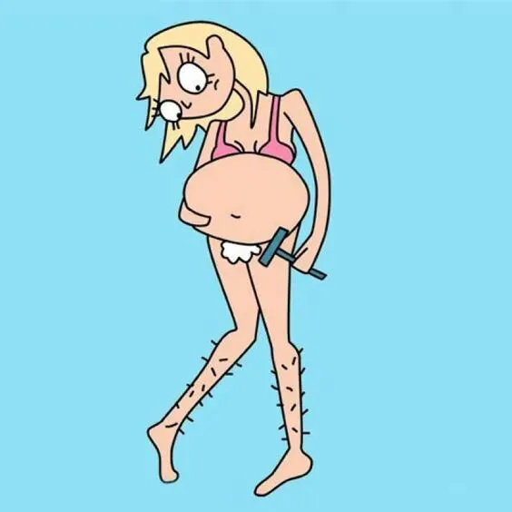
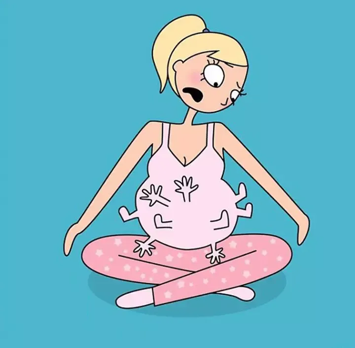
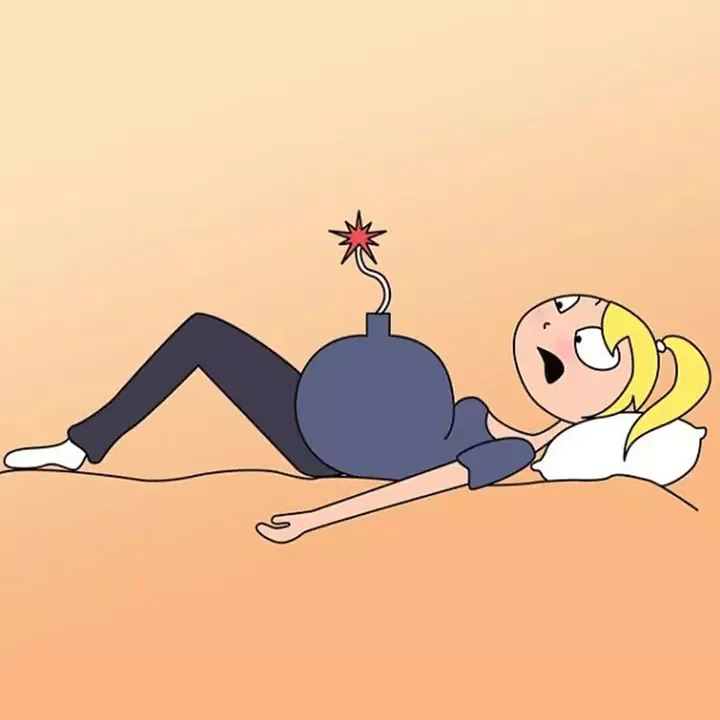
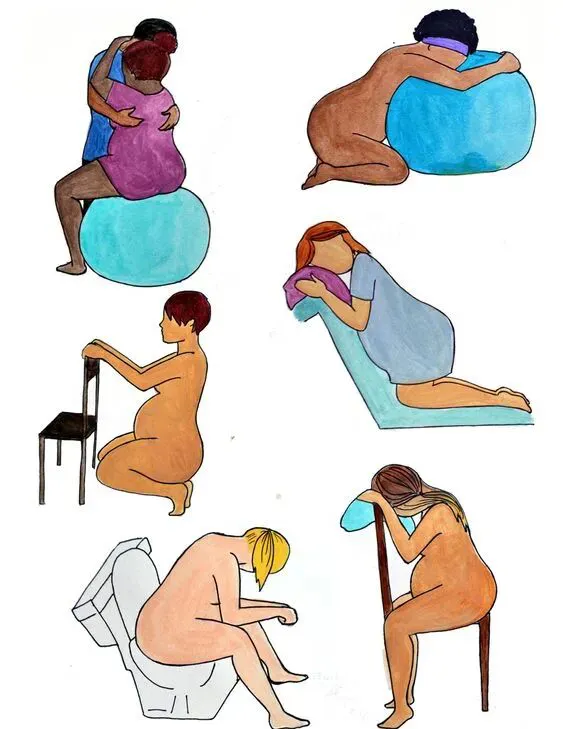
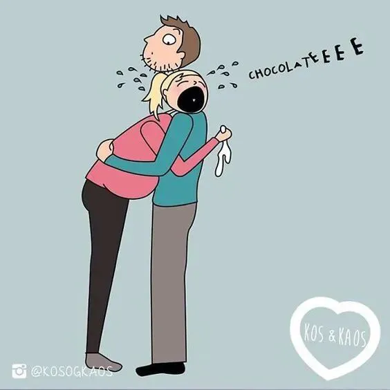
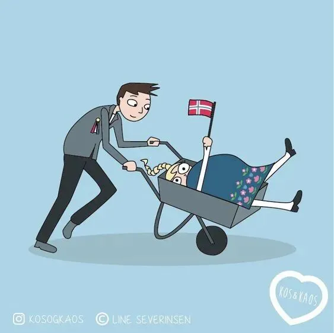
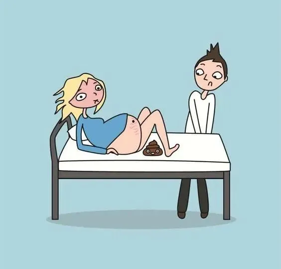